<!DOCTYPE lake>
<p data-lake-id="ue5a8ba09" id="ue5a8ba09" style="text-align: center">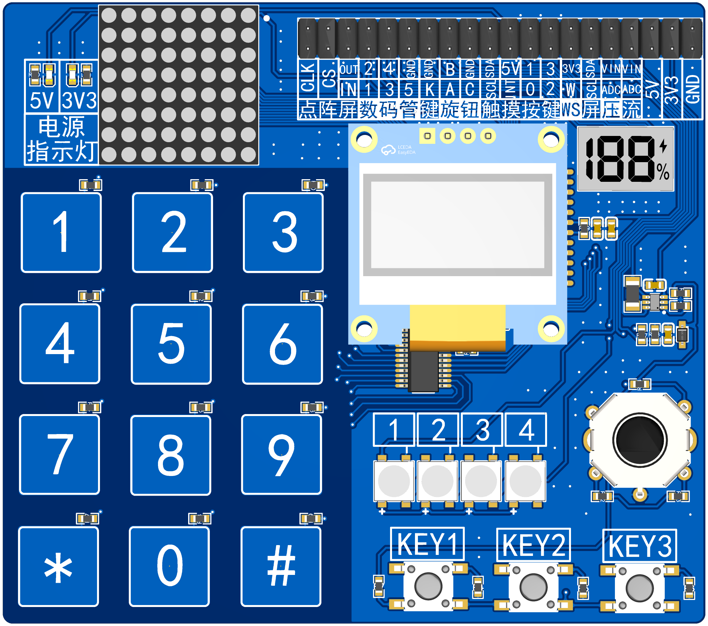</p><h2 data-lake-id="MzuWX" data-lake-index-type="2" id="MzuWX"><span data-lake-id="ue5a7275c" id="ue5a7275c">测量电压</span></h2><p data-lake-id="uda394d12" id="uda394d12" style="text-align: center">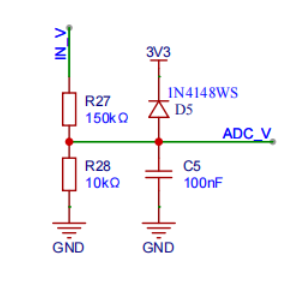</p><p data-lake-id="u75812490" id="u75812490"><br/></p><h2 data-lake-id="GUA57" data-lake-index-type="2" id="GUA57"><span data-lake-id="u50b7a3e9" id="u50b7a3e9">测量电流</span></h2><p data-lake-id="u1ac86bbe" id="u1ac86bbe" style="text-align: center">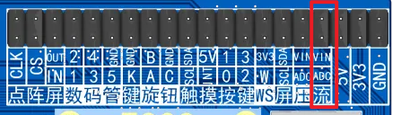</p><p data-lake-id="u11403b20" id="u11403b20" style="text-align: center">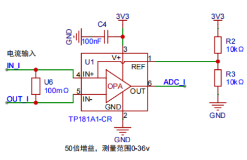</p><p data-lake-id="ue6c70c2a" id="ue6c70c2a" style="text-align: center">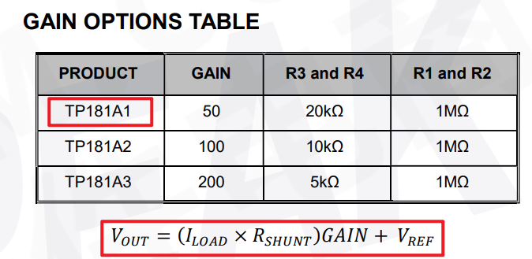</p><p data-lake-id="ubc18cdd4" id="ubc18cdd4"><br/></p><h2 data-lake-id="zyH8u" data-lake-index-type="2" id="zyH8u"><span data-lake-id="u38c20611" id="u38c20611">驱动ADC按键</span></h2><p data-lake-id="u25782b87" id="u25782b87"><br/></p><p data-lake-id="u05bd5f1b" id="u05bd5f1b">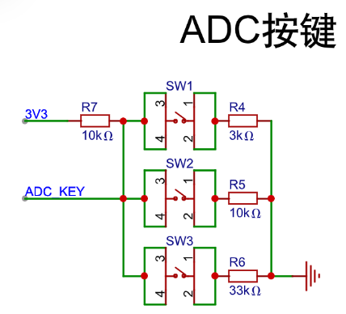</p><p data-lake-id="uf0dadafc" id="uf0dadafc"><span data-lake-id="uf7efa4f6" id="uf7efa4f6">参考地址：\Espressif\frameworks\esp-idf-v5.4.1\examples\peripherals\adc\continuous_read\main</span></p><span class="yuque-card-unsupported">[codeblock]</span><p data-lake-id="u07ab43c2" id="u07ab43c2"><br/></p><h2 data-lake-id="u5kXK" data-lake-index-type="2" id="u5kXK"><span data-lake-id="ua37ebb43" id="ua37ebb43">驱动SSD1306屏幕</span></h2><p data-lake-id="u919b4219" id="u919b4219" style="text-align: center">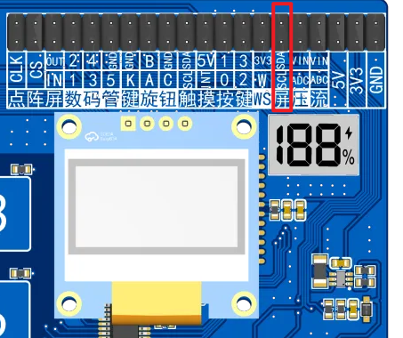</p><p data-lake-id="u41d6a631" id="u41d6a631"><br/></p><p data-lake-id="udf8afc67" id="udf8afc67"><span data-lake-id="ubfe1db2f" id="ubfe1db2f">参考文件路径:\Espressif\frameworks\esp-idf-v5.3.1\examples\peripherals\lcd\i2c_oled</span></p><p data-lake-id="ue3da0d1b" id="ue3da0d1b"><span data-lake-id="u70392264" id="u70392264">根据官方给出的示例代码，直接复制最终组合为如何代码</span></p><h3 data-lake-id="YeLD6" data-lake-index-type="2" id="YeLD6"><span data-lake-id="u0844b4df" id="u0844b4df">添加依赖</span></h3><span class="yuque-card-unsupported">[codeblock]</span><ul list="ub62f621a"><li data-lake-id="ua03136c6" fid="u1ab65bed" id="ua03136c6"><span class="lake-fontsize-11" data-lake-id="u7f087743" id="u7f087743" style="color: rgb(97, 102, 107)">~（波浪号）表示允许安装最新的修订版本（即最后一位数字可以变化，但前两位必须相同）。具体来说：</span></li></ul><ul data-lake-indent="1" list="ub62f621a"><li data-lake-id="u3b26ceef" fid="u13936ca9" id="u3b26ceef"><span class="lake-fontsize-11" data-lake-id="uc6e55a1b" id="uc6e55a1b" style="color: rgb(97, 102, 107)">~8.3.0 表示允许安装 8.3.0 及以上版本，但不超过 8.4.0。也就是说，允许 8.3.x 系列的最新版本，但不包括 8.4.0 及以上。</span></li></ul><ul list="ub62f621a" start="2"><li data-lake-id="u29870356" fid="u1ab65bed" id="u29870356"><span class="lake-fontsize-11" data-lake-id="u05cc9102" id="u05cc9102" style="color: rgb(97, 102, 107)">^（插入符号）表示允许安装最新的次要版本（即中间数字可以变化，但主版本号必须相同）。具体来说：</span></li></ul><ul data-lake-indent="1" list="ub62f621a"><li data-lake-id="u35adb96b" fid="u5d3f23cc" id="u35adb96b"><span class="lake-fontsize-11" data-lake-id="ufa514df4" id="ufa514df4" style="color: rgb(97, 102, 107)">^1 表示允许安装 1.0.0 及以上版本，但不超过 2.0.0。也就是说，允许 1.x.x 系列的最新版本，但不包括 2.0.0 及以上。</span></li></ul><p data-lake-id="u4141b027" id="u4141b027"><span class="lake-fontsize-11" data-lake-id="u74909691" id="u74909691" style="color: rgb(97, 102, 107)">​</span><br/></p><h3 data-lake-id="DbaVI" data-lake-index-type="2" id="DbaVI"><span data-lake-id="ud005d7a0" id="ud005d7a0">修改示例代码</span></h3><span class="yuque-card-unsupported">[codeblock]</span><p data-lake-id="u4534efd1" id="u4534efd1"><br/></p><p data-lake-id="u1be0993c" id="u1be0993c"><br/></p><p data-lake-id="u15fcbabb" id="u15fcbabb"><br/></p><h2 data-lake-id="hlDCo" data-lake-index-type="2" id="hlDCo"><span data-lake-id="u0ab248c6" id="u0ab248c6">驱动led188</span></h2><p data-lake-id="uda8c9115" id="uda8c9115" style="text-align: center">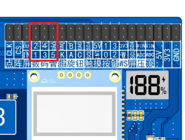</p><p data-lake-id="u2e940967" id="u2e940967" style="text-align: center">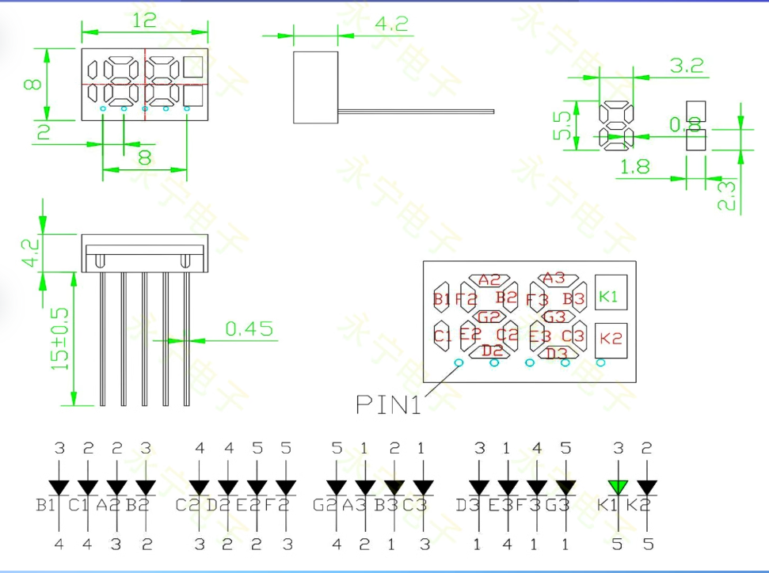</p><h3 data-lake-id="nTQuN" id="nTQuN"><span data-lake-id="u1b29b80b" id="u1b29b80b">导包</span></h3><span class="yuque-card-unsupported">[codeblock]</span><h3 data-lake-id="NAYJ3" id="NAYJ3"><span data-lake-id="u360f54d3" id="u360f54d3">对引脚进行排序</span></h3><span class="yuque-card-unsupported">[codeblock]</span><p data-lake-id="u00c4f02c" id="u00c4f02c"><span data-lake-id="u4e463841" id="u4e463841">在代码中，对每个灯珠进行定义</span></p><span class="yuque-card-unsupported">[codeblock]</span><h3 data-lake-id="m8jw0" id="m8jw0"><span data-lake-id="ub1fb3b77" id="ub1fb3b77">数字编码</span></h3><span class="yuque-card-unsupported">[codeblock]</span><h3 data-lake-id="APCUR" id="APCUR"><span data-lake-id="u42f10c64" id="u42f10c64">代码编写</span></h3><h4 data-lake-id="jJcz1" id="jJcz1"><span data-lake-id="ub3de26ff" id="ub3de26ff">引脚初始化</span></h4><span class="yuque-card-unsupported">[codeblock]</span><h4 data-lake-id="JUewq" id="JUewq"><span data-lake-id="u9dabea5a" id="u9dabea5a">设置数据</span></h4><span class="yuque-card-unsupported">[codeblock]</span><h4 data-lake-id="RLVc6" id="RLVc6"><span data-lake-id="u4e7db3cf" id="u4e7db3cf">显示数据</span></h4><span class="yuque-card-unsupported">[codeblock]</span><h4 data-lake-id="QxloH" id="QxloH"><span data-lake-id="u7c13516b" id="u7c13516b">其它参考代码</span></h4><p data-lake-id="ub5c9c017" id="ub5c9c017"><br/></p><span class="yuque-card-unsupported">[codeblock]</span><p data-lake-id="u29f3ba8c" id="u29f3ba8c"><span data-lake-id="u00f14d1a" id="u00f14d1a">​</span><br/></p><p data-lake-id="uad86fb03" id="uad86fb03"><span data-lake-id="u0b0cbb61" id="u0b0cbb61">​</span><br/></p><h2 data-lake-id="hSm5Y" data-lake-index-type="2" id="hSm5Y"><span data-lake-id="u69632ca1" id="u69632ca1">驱动ws2812</span></h2><p data-lake-id="ud5440c13" id="ud5440c13"><span data-lake-id="uebb87b75" id="uebb87b75"> WS2812B-2020是一个集控制电路与发光电路于一体的智能外控LED光源；每个元件即为一个像素点；像素点内部包含了智能数字接口数据锁存信号整形放大驱动电路，还包含有高精度的内部振荡器和可编程定电流控制部分，有效保证了像素点光的颜色高度一致。 </span></p><p data-lake-id="u9bbb9a88" id="u9bbb9a88"><span data-lake-id="u612c6cf2" id="u612c6cf2">​</span><br/></p><p data-lake-id="u9d3867d8" id="u9d3867d8"><span data-lake-id="u8b19d8b9" id="u8b19d8b9">数据协议采用单线归零码的通讯方式，像素点在上电复位以后，DIN端接受从控制器传输过来的数据，首先送过来的24bit数据被第一个像素点提取后，送到像素点内部的数据锁存器，剩余的数据经过内部整形处理电路整形放大后通过DO端口开始转发输出给下一个级联的像素点，每经过一个像素点的传输，信号减少24bit；像素点采用自动整形转发技术，使得该像素点的级联个数不受信号传送的限制，仅受限信号传输速度要求；高达2KHz的端口扫描频率，在高清摄像头的捕捉下都不会出现闪烁现象，非常适合高速移动产品的使用；280μs以上的RESET时间，出现中断也不会引起误复位，可以支持更低频率、价格便宜的MCU；LED具有低电压驱动、环保节能、亮度高、散射角度大、一致性好超、低功率及超长寿命等优点。将控制电路集成于LED上面，电路变得更加简单，体积小，安装更加简便。  </span></p><p data-lake-id="u9e188bfc" id="u9e188bfc">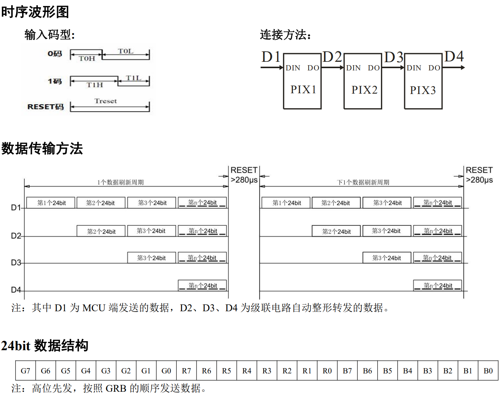</p><p data-lake-id="uc3eebe58" id="uc3eebe58"><span data-lake-id="u085a540b" id="u085a540b"><br><br/></br></span></p><h3 data-lake-id="lCvoZ" id="lCvoZ"><span data-lake-id="u646d4899" id="u646d4899">示例代码</span></h3><p data-lake-id="uec0635a9" id="uec0635a9"><span data-lake-id="uf0907294" id="uf0907294">参考文档：</span><a data-lake-id="u6b62f646" href="https://github.com/espressif/idf-extra-components/tree/master/led_strip/examples/led_strip_rmt_ws2812" id="u6b62f646" rel="noopener noreferrer" target="_blank"><span data-lake-id="u318ce2f8" id="u318ce2f8">https://github.com/espressif/idf-extra-components/tree/master/led_strip/examples/led_strip_rmt_ws2812</span></a></p><p data-lake-id="u939d79db" id="u939d79db"><span data-lake-id="uf8833522" id="uf8833522">​</span><br/></p><p data-lake-id="u4d7a0235" id="u4d7a0235"><span data-lake-id="u90db3f44" id="u90db3f44">参考文档：</span><a class="yuque-card-link" href="https://components.espressif.com/components/espressif/led_strip/versions/3.0.0" rel="noopener noreferrer" target="_blank">bookmarkInline：bookmarkInline</a></p><p data-lake-id="u2275cc39" id="u2275cc39"><br/></p><h4 data-lake-id="pc9n5" id="pc9n5"><span data-lake-id="u3b947080" id="u3b947080">添加依赖</span></h4><ol list="ub350f687"><li data-lake-id="u9d11531e" fid="u4f3d14b5" id="u9d11531e"><span data-lake-id="ud0a98bc1" id="ud0a98bc1">打开idf命令行窗口：</span></li></ol><p data-lake-id="uf8c53d25" id="uf8c53d25"></p><ol list="u9b58fc5b" start="2"><li data-lake-id="u91e7592f" fid="uc06d8982" id="u91e7592f"><span data-lake-id="u04d104c8" id="u04d104c8">添加依赖：</span></li></ol><p data-lake-id="ue7221dc8" id="ue7221dc8"></p><span class="yuque-card-unsupported">[codeblock]</span><h4 data-lake-id="kWvT8" id="kWvT8"><span data-lake-id="uc3894ecb" id="uc3894ecb">导入头文件</span></h4><span class="yuque-card-unsupported">[codeblock]</span><h4 data-lake-id="sOOy0" id="sOOy0"><span data-lake-id="u108526f3" id="u108526f3">声明常量</span></h4><span class="yuque-card-unsupported">[codeblock]</span><h4 data-lake-id="wQ1Zx" id="wQ1Zx"><span data-lake-id="udd446a3c" id="udd446a3c">定义颜色值</span></h4><span class="yuque-card-unsupported">[codeblock]</span><h4 data-lake-id="MKL6f" id="MKL6f"><span data-lake-id="u1b01be3a" id="u1b01be3a">配置ws2812</span></h4><span class="yuque-card-unsupported">[codeblock]</span><h4 data-lake-id="agz2W" id="agz2W"><span data-lake-id="u30458e4e" id="u30458e4e">编写测试函数</span></h4><span class="yuque-card-unsupported">[codeblock]</span><h2 data-lake-id="nAb9U" id="nAb9U"><br/></h2><p data-lake-id="u8869a5ef" id="u8869a5ef"><br/></p><h2 data-lake-id="FvHrK" data-lake-index-type="2" id="FvHrK"><span data-lake-id="u0125916d" id="u0125916d">驱动SC12B触摸板</span></h2><p data-lake-id="u7a3f7076" id="u7a3f7076" style="text-align: center">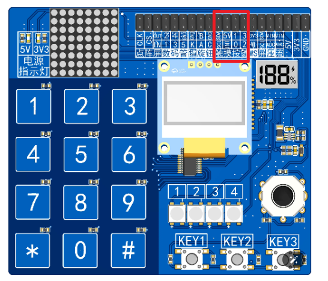</p><p data-lake-id="u3bb5fbbf" id="u3bb5fbbf">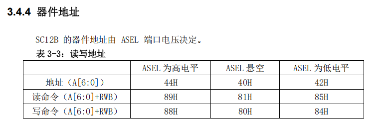</p><p data-lake-id="u6969111f" id="u6969111f">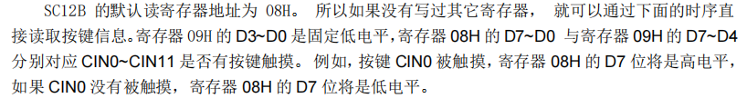</p><p data-lake-id="ua0d4274d" id="ua0d4274d">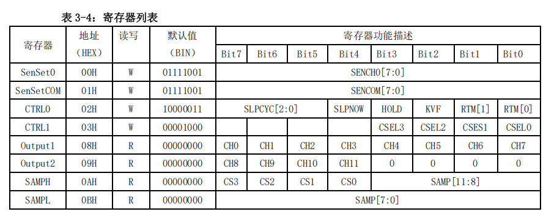</p><p data-lake-id="u3d690bc0" id="u3d690bc0"><span data-lake-id="ueb6188c4" id="ueb6188c4">SCL ---&gt; 1</span></p><p data-lake-id="uc9e6e0cd" id="uc9e6e0cd"><span data-lake-id="u4966e1b5" id="u4966e1b5">SDA ---&gt; 2</span></p><p data-lake-id="uc7399cdb" id="uc7399cdb"><span data-lake-id="u731529d8" id="u731529d8">INT ---&gt;3</span></p><p data-lake-id="u3383a698" id="u3383a698">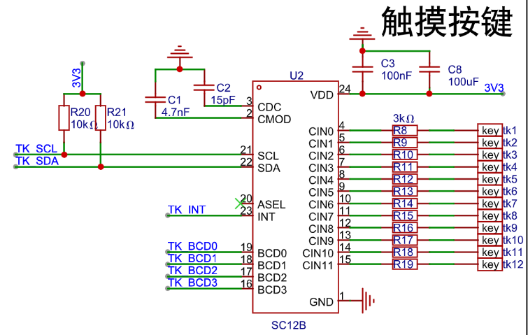</p><p data-lake-id="u1fc26032" id="u1fc26032"><br/></p><h3 data-lake-id="SOPMa" data-lake-index-type="2" id="SOPMa"><span data-lake-id="uae4568a0" id="uae4568a0">实现步骤</span></h3><h4 data-lake-id="wQw4C" data-lake-index-type="2" id="wQw4C"><span data-lake-id="u2e7812d1" id="u2e7812d1">导入头文件</span></h4><span class="yuque-card-unsupported">[codeblock]</span><p data-lake-id="ua7c37f87" id="ua7c37f87"><span data-lake-id="ua2112eff" id="ua2112eff">​</span><br/></p><h4 data-lake-id="cZ7NN" data-lake-index-type="2" id="cZ7NN"><span data-lake-id="ub809c2d6" id="ub809c2d6">声明地址</span></h4><span class="yuque-card-unsupported">[codeblock]</span><p data-lake-id="u36f5b490" id="u36f5b490"><br/></p><h4 data-lake-id="ROtyE" data-lake-index-type="2" id="ROtyE"><span data-lake-id="ua2d2693c" id="ua2d2693c">IIC初始化</span></h4><span class="yuque-card-unsupported">[codeblock]</span><h4 data-lake-id="Te3ek" data-lake-index-type="2" id="Te3ek"><span data-lake-id="ud78ba1c7" id="ud78ba1c7">添加IIC设备</span></h4><span class="yuque-card-unsupported">[codeblock]</span><p data-lake-id="uf975f794" id="uf975f794"><br/></p><h4 data-lake-id="K6DmP" data-lake-index-type="2" id="K6DmP"><span data-lake-id="u68e0e11a" id="u68e0e11a">中断引脚初始化</span></h4><span class="yuque-card-unsupported">[codeblock]</span><h4 data-lake-id="G9YIg" data-lake-index-type="2" id="G9YIg"><span data-lake-id="u33bbfb11" id="u33bbfb11">中断处理任务</span></h4><p data-lake-id="ua185830d" id="ua185830d"><span data-lake-id="ue83e687a" id="ue83e687a">编写中断处理函数</span></p><span class="yuque-card-unsupported">[codeblock]</span><p data-lake-id="u11644a91" id="u11644a91"><span data-lake-id="u4e9608ee" id="u4e9608ee">启动一个任务，用于处理中断任务</span></p><span class="yuque-card-unsupported">[codeblock]</span><p data-lake-id="ud9295281" id="ud9295281"><span data-lake-id="u6163e68d" id="u6163e68d">在任务里面，我们不停的等待中断发送过来的消息，当有中断消息，我们就通过IIC去读取案件按下的值</span></p><span class="yuque-card-unsupported">[codeblock]</span><p data-lake-id="udfc0f5bb" id="udfc0f5bb"><br/></p><h2 data-lake-id="ia4CB" id="ia4CB"><span data-lake-id="ucfa2dbf2" id="ucfa2dbf2">​</span><br/></h2><h2 data-lake-id="nrjsa" data-lake-index-type="2" id="nrjsa"><span data-lake-id="u1221e519" id="u1221e519">驱动EC12旋钮编码器</span></h2><p data-lake-id="u655b41f0" id="u655b41f0" style="text-align: center">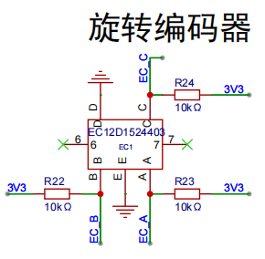</p><p data-lake-id="u8f70bc9f" id="u8f70bc9f" style="text-align: center">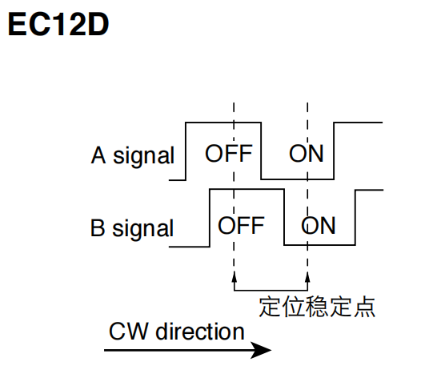</p><h4 data-lake-id="unkpd" id="unkpd"><span data-lake-id="u6c321404" id="u6c321404">EC12</span></h4><p data-lake-id="uecefded1" id="uecefded1">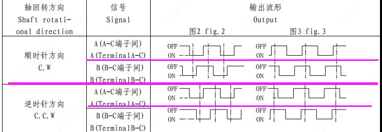</p><p data-lake-id="ud845ea3b" id="ud845ea3b"></p><p data-lake-id="u4bc45491" id="u4bc45491"><br/></p><p data-lake-id="u27953dba" id="u27953dba"><span data-lake-id="uc04135dc" id="uc04135dc">以C为GND，分别检测 A和C的高低电平，B和C的高低电平。</span></p><h4 data-lake-id="ZVh4X" id="ZVh4X"><span data-lake-id="udd9db0d7" id="udd9db0d7">物理构造</span></h4><p data-lake-id="ub87a4efc" id="ub87a4efc"><span data-lake-id="ud01546a0" id="ud01546a0">内部其实是环形滑动变阻器，只不过安装时错开了90度，旋转时就是出现高低电平不同的效果。</span></p><h4 data-lake-id="mi1dk" id="mi1dk"><strong><span class="lake-fontsize-12" data-lake-id="u8737686a" id="u8737686a" style="color: rgba(0, 0, 0, 0.9); background-color: rgb(252, 252, 252)">旋转方向与相位关系</span></strong></h4><p data-lake-id="uf661980d" id="uf661980d"><span data-lake-id="u159842a3" id="u159842a3">如果 A是下降沿时，此时B为低电平，那么说明，旋钮是顺时针旋转。</span></p><p data-lake-id="u20e916c4" id="u20e916c4"><span data-lake-id="uc53f5380" id="uc53f5380">如果 A是下降沿时，此时B为高电平，那么说明，旋钮是逆时针旋转。</span></p><p data-lake-id="ud952b7a5" id="ud952b7a5"><span data-lake-id="u074c5b68" id="u074c5b68">如果 A是上升沿时，此时B为高电平，那么说明，旋钮是顺时针旋转。</span></p><p data-lake-id="u88b65824" id="u88b65824"><span data-lake-id="uab4e457a" id="uab4e457a">如果 A是上升沿时，此时B为低电平，那么说明，旋钮是逆时针旋转。</span></p><p data-lake-id="ube74b1c2" id="ube74b1c2"><br/></p><h3 data-lake-id="kXv6c" data-lake-index-type="2" id="kXv6c"><span data-lake-id="u5c0a0152" id="u5c0a0152">导入头文件</span></h3><span class="yuque-card-unsupported">[codeblock]</span><p data-lake-id="ufc9fb78a" id="ufc9fb78a"><br/></p><h3 data-lake-id="AglEH" data-lake-index-type="2" id="AglEH"><span data-lake-id="u1bc84200" id="u1bc84200">定义常量</span></h3><span class="yuque-card-unsupported">[codeblock]</span><p data-lake-id="u79db602f" id="u79db602f"><br/></p><h3 data-lake-id="nUa52" data-lake-index-type="2" id="nUa52"><span data-lake-id="u3941a80e" id="u3941a80e">实现中断处理函数</span></h3><span class="yuque-card-unsupported">[codeblock]</span><h3 data-lake-id="Oqb9j" data-lake-index-type="2" id="Oqb9j"><span data-lake-id="ud197a564" id="ud197a564">处理中断消息</span></h3><span class="yuque-card-unsupported">[codeblock]</span><h3 data-lake-id="GPzir" data-lake-index-type="2" id="GPzir"><span data-lake-id="u516f8578" id="u516f8578">编写测试函数</span></h3><span class="yuque-card-unsupported">[codeblock]</span><h2 data-lake-id="Esvji" id="Esvji"><br/></h2>